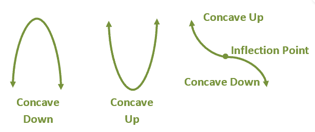

Topic 10 Critical Values, Extema and Curve Sketching
We first review the Five Rules of Derivative
These rules of the derivative will be used frequently throughout the semester.

We also discussed the relationship between the monotonicity and the sign of the derivative of a function. The following figure summarizes the relationship.
10.1 Summary of Critical Values and Extrema
10.1.1 Critical values
Definition: A critical value of a function \(f(x)\) is any number \(c\) in the domain of \(f(x)\) for which the tangent line at \((c, f(c))\) is horizontal or for which the derivative does not eixst. That is, \(c\) is a critical value if \(f(c)\) exists and
\[ f^\prime(c) = 0 ~ ~ \text{or}~~ f^\prime(c) ~ \text{does not exist} \] If \(c\) is a critical value of \(f(x)\), then \((c, f(c))\) is called a critical point.
All labeled points on the above figure are critical points since the corresponding derivative is either 0 or does not exist.
\(f^\prime(x) = 0\) for \(x = c_1, c_2, c_4, c_7\) and \(c_8\). That is, the tangent line to the graph is horizontal at these values.
\(f^\prime(x)\) does not exist for \(x = c_3, c_5\) and \(c_6\). The tangent line is vertical at \(c_3\) and there are corners at both \(c_5\) and \(c_6\).
Example 2 Find critical values of the function \(f(x) = x^3/3 - x + 2/3\).
Solution: By the definition, we need to the solution to \(f^\prime(x) = 0\) and those values on which the derivative of \(f(x)\) does not exist.
Note that \(f^\prime(x) = x^2 - 1\). Therefore, equation \(x^2 -1 = 0\) has solutions \(x = \pm 1\). These two critical values are the same as shown in example 1.
10.1.2 Relative (Local) Maximum and Minimum Values
Graphically, the local maximum and minimum are the second coordinates of the points that are labeled in the following figure.
Note that x-values at which a continuous function has relative extrema are those values for which the derivative is 0 or for which the derivative does not exist—the critical values.
Theorem 1: If a function \(f(x)\) has a relative extreme value \(f(c)\) on an open interval, then \(c\) is a critical value, and
\[ f^\prime(c) = 0 ~~\text{or}~~f^\prime(c) ~~ \text{does not exist.} \]
The next theorem gives a test for relative extrema: The First-Derivative Test for Relative Extrema
Theorem 2: For any continuous function \(f(x)\) that has exactly one critical value \(c\) over an open interval \((a, b)\):
\(f(x)\) has a relative minimum at \(c\) if \(f^\prime(x) < 0\) on \((a, c)\) and \(f^\prime(x) > 0\) on \((c, b)\). That is, \(f(x)\) is decreasing to the left of \(c\) and increasing to the right of \(c\). See the middle panel (B) of the following figure.
\(f(x)\) has a relative maximum at \(c\) if \(f^\prime(x) > 0\) on \((a, c)\) and \(f^\prime(x) < 0\) on \((c, b)\). That is, \(f(x)\) is increasing to the left of \(c\) and decreasing to the right of \(c\). See the left panel (A) of the following figure.
\(f(x)\) has neither a relative maximum nor a relative minimum at \(c\) if \(f^\prime(x)\) has the same sign on both sides of \(c\). See the right panel (C) of the following figure.
Example 3: Consider the relative maximum and relative minimum of function \(f(x) = 4x^3 - 9x^2 - 30x + 25\).
Solution The derivative \(f^\prime(x) = 12x^2 - 18x -30 = 6(2x^2 - 9x - 5) = 6(ax-5)(x+1)\). Set \(f^\prime(x) = 0\), we have \(6(2x-5)(x+1) = 0\), therefore, \(x = 2.5\) or \(x = -1\).
10.2 Concavity of Function
To sketch a given function, the concept of concavity is crucial to characterize the shape of the curve for a given function. Before introducing the definition, we first introduce the concept of the second-order derivative.
10.2.1 The Second Order Derivative
We have discussed derivatives and various rules for finding the derivative of different functions. These derivatives are called first order derivatives. The second order derivative is the derivative of the first order derivative. We have used \(f^\prime(x)\) or \(df(x)/dx\) to denote the first derivative. Similarly, we use \(f^{\prime\prime}(x)\) or \(d^2f(x)/dx^2\) to denote the second order derivative.
example 4: Find the second order derivative of \(f(x) = xe^x\).
Solution: We use the multiplicative rule of derivative to get \(f^\prime) = [xe^x]^\prime = (x)^\prime e^x + x [e^x]^\prime = e^x + xe^x = (1+x)e^x\). The second-order derivative of a function \(f(x)\) is given by
\[ f^{\prime\prime}(x) = [(1+x)e^x]^\prime = (1+x)^\prime e^x + (1+x)[e^x]^\prime =e^x + (1 + x) e^x = (2 + x) e^x. \]
The second-order derivative of a function is used in the definition of the concavity of functions.
10.2.2 Concavity of Functions
First, we look at the graphical description of concavity.

Recall that
The formal definition is given below.
Definition: Suppose that \(f(x)\) is a function whose derivative \(f^\prime(x)\) exists at every point in an open interval I. Then
In the above definition, the statement \(f^\prime(x)\) is increasing (decreasing) implies that its derivative is positive(negative) which further implies that second order derivative on I is positive(negative)! This is summarized in the following theorem for testing concave up or concave down.
Theorem 3: A Test for Concavity
If \(f^{\prime\prime}(x) > 0\) for all \(x\) on an open interval \((a, b)\), then the graph of \(f(x)\) is concave up \((a, b)\);
If \(f^{\prime\prime}(x) < 0\) for all \(x\) on an open interval \((a, b)\), then the graph of \(f(x)\) is concave down \((a, b)\).
Example 5: Find intervals of concavity up and down of \(f(x)=3x^2-9x+6\).
Solution: Note that \(f^\prime(x) = (3x^2-9x+6)^\prime = 6x - 9\). Therefore \(f^{\prime\prime}(x) = 6 > 0\) for all \(x\in (-\infty, \infty)\). This means that function \(f(x) = 3x^2-9x+6\) is concave up over \((-\infty, \infty)\).
10.2.3 Testing for Minima and maxima
We can see from the above figures that the concavity of the graph of a function over an interval tells whether a relative minimum or maximum exists in the open interval. The theorem describes how to test relative extrema.
Theorem 4: The second order-derivative Test for Relative Extrema.
Suppose that \(f(x)\) is differentiable for every &x& in an open interval \((a, b)\) and that there is a critical value \(c\) in \((a, b)\) for which \(f^\prime(c) = 0\). Then
\(f(c)\) is a relative minimum if \(f^{\prime\prime}(c) > 0\).
\(f(c)\) is a relative maximum if \(f^{\prime\prime}(c) < 0\).
This theorem is also pictorially depicted in the graph in Theorem 3.
Example 6 continued: Since \(f^\prime(x) = 6x - 9\). Setting \(6x - 9 = 0\), we have \(x = 3/2\). Since \(f^{\prime\prime}(3/2) = 6 > 0\). This implies that \(f(x) = 3x^2-9x+6\) achieves its relative minimum at \(c = 3/2\).
In Theorem 4, we discussed the cases of \(f^{\prime\prime}(c) > 0\) and \(f^{\prime\prime}(c)\). What if \(f^{\prime\prime}(c) = 0\)?
10.2.4 Inflection Point - Turning Point of Concavity
An inflection point is where a curve goes from concave upward to concave downward (or vice versa).
Definition: If \(f(x)\) has a point of inflection, it must occur at a value \(x_0\) in the domain of \(f(x)\) where
\[ f^{\prime\prime}(x_0) = 0 ~~~\text{or}~~~ f^{\prime\prime}(x_0)~~\text{does not exist.} \]
Example 7: Find the inflection point of function \(f(x) = x^3+6x^2+12x+7\).
Solution: We use the above definition of an inflection point to answer the question. Solution: We use the above definition of an inflection point to answer the question.
We have developed the necessary tools for sketching a given function. In the next section, we summarized the steps with examples.
10.3 Curve Sketching
The following steps are summarized in the textbook:
Derivatives and Domain. Find \(f^\prime(x)\) and \(f^{\prime\prime}(x)\) in the domain of \(f(x)\).
Critical Values of \(f(x)\). Find the critical values by solving \(f^\prime(x) = 0\) and by finding where \(f^\prime(x)\) does not exist. These numbers yield candidates for relative maxima or minima. Find the function values at these points.
Increasing and/or Decreasing; Relative Extrema. Substitute each critical value \(x_0\), from step (b) into \(f^{\prime\prime}(x)\). If \(f^{\prime\prime}(x_0) < 0\), then \(f(x_0)\) is a relative maximum and \(f(x)\) is increasing on the left of \(x_0\)and decreasing on the right. If \(f^{\prime\prime}(x_0) > 0\), then \(f(x_0)\) is a relative minimum and f is decreasing on the left of \(x_0\) and increasing on the right.
Inflection Points. Determine candidates for inflection points by finding where \(f^{\prime\prime}(x_0) = 0\) or \(f^{\prime\prime}(x)\) does not exist. Find the function values at any of these points (the second coordinate of the inflection points).
Concavity. Use any candidates for inflection points from step (d) to define intervals. Substitute test values into \(f^{\prime\prime}(x)\) to determine where the graph is concave up (\(f^{\prime\prime}(x)\) > 0) and where it is concave down \(f^{\prime\prime}(x) < 0\). Step (c) may have provided some of this information.
Sketch the Graph. Sketch the graph using the information from steps (a)–(e), plotting extra points as needed.
The above 6 steps need to be followed when sketching a given function. Next, we do several examples to illustrate the process of curve sketching.
The top animated graph represents the derivative of the function \(f(x) = 25x^3(1-4x^3)e^{-5x^2}\) that is curved in the bottom figure. We can see that
The root of \(f^\prime(x) = 0\), the intersection of the curve and the horizontal axis (top red curve), correspond to the critical values shown in the bottom curve.
The peaks of the red curve in the top figure represent the inflection points (not labeled in the bottom figure) since the monotonicity of \(f^\prime(x)\) changes at these peaks.
The basic idea is to find all critical points and then use concavity and inflection points to sketch the curve. In the following example, we simplify the process into 4 basic steps.
Example 8: Find any relative extrema and inflection points and graph of the following function
\[ f(x) = x^4 - 2x^2 \]
Solution: we follow the above steps to answer the questions.
Step 1. \(f^\prime(x) = (x^4 - 2x^2)^\prime = 4x^3 - 4x = 4x(x^2-1) = 4x(x-1)(x+1) = 0\). This means that there are three critical values in the domain of this function \((-\infty, \infty)\). The three corresponding critical points are \(A(-1, -1), B(0, 0)\) and \(C(1, -1)\).
Step 2. \(f^{\prime\prime}(x) = [4x^3 - 4x]^\prime = 12x^2 - 4 = 4(3x^2-1) = 4\left[(\sqrt{3}x)^2 - 1\right] = 4[\sqrt{3}x-1][\sqrt{3}x+1] = 0\), which yields \([\sqrt{3}x-1] = 0\) or \([\sqrt{3}x+1] = 0\). That is \(x = \sqrt{3}/3\) or \(x = -\sqrt{3}/3\). These are the two inflection points. The two y-coordinates of the inflection points are \(f(\pm \sqrt{3}/3) = (\sqrt{3}/3)^4 - 2(\sqrt{3}/3)^2 = 1/9 - 2/3 = -5/9\). The two inflection points are \(E(\frac{\sqrt{3}}{3}, -\frac{5}{9})\) and \(D(-\frac{\sqrt{3}}{3}, -\frac{5}{9})\).
Step 3 Concavity intervals defined by the inflection points: \(E(\frac{\sqrt{3}}{3}, -\frac{5}{9})\) and \(D(-\frac{\sqrt{3}}{3}, -\frac{5}{9})\):
| Interval | Sign of \(f^{\prime\prime}(x)\) | Concave Up | Concave Down | Relative Extrema |
|---|---|---|---|---|
| \((-\infty, -\frac{\sqrt{3}}{3})\) | \(f^{\prime\prime}(x) > 0\) | YES | NO | Relative Minimum |
| \((-\frac{\sqrt{3}}{3}, \frac{\sqrt{3}}{3})\) | \(f^{\prime\prime}(x) < 0\) | NO | YES | Relative Maximum |
| \((\frac{\sqrt{3}}{3}, \infty)\) | \(f^{\prime\prime}(x) > 0\) | YES | NO | Relative Minimum |
Step 4: Determine extrema based on the concavity intervals (see the above summary table and the following figure).